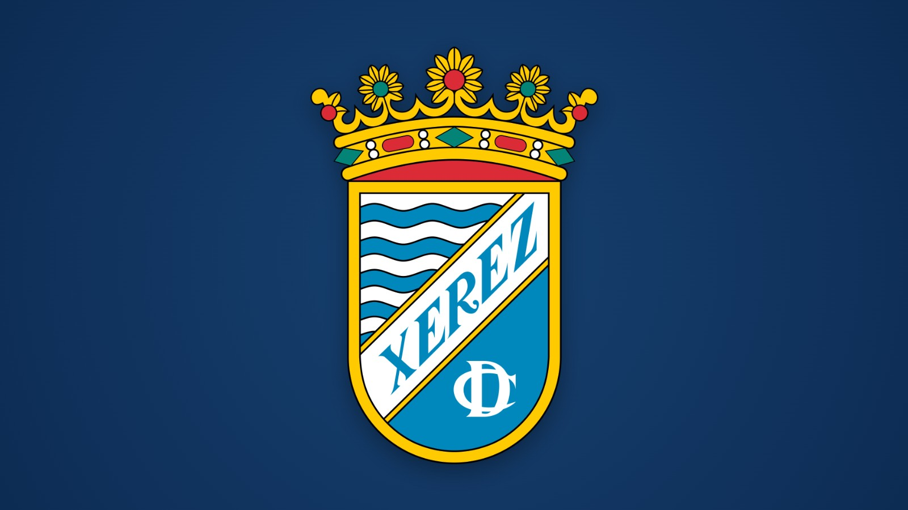

Jerez City Council urged to finally present Xerez CD with the City Gold Medal, awarded in 2010

Photo: Xerez CDMembers of the 75th Anniversary Committee denounce, in a letter to the mayor, the "irregular situation" of a full council resolution that remains unfulfilled more than fifteen years later
JEREZ. The City Gold Medal that the full municipal council awarded to Xerez CD in 2010 has still not been presented. This is denounced in a letter addressed to the mayor of Jerez, María José García Pelayo, dated August 2026 and signed by Jesús Fernández Aguilar, which calls on the City Council to redress what its authors describe as a "historic injustice".
A request that keeps being turned down
The letter reviews the steps taken so far. In 2023, on behalf of the club’s 75th Anniversary Committee, they held a conversation with the councillor for Sport, who undertook to pass the request on to the relevant bodies. The answer they received was that it was not the right moment.
On 22 July 2024 they submitted a letter through the official channels to formally request that this failure to comply be put right. The mayor then informed the president of Xerez CD of a new negative response, once again based on the situation not being favourable. According to the letter, this increased the weariness and incomprehension of those driving the claim.
"There are no objective circumstances"
Two years later, the signatories maintain that the context has changed. They highlight the current moment of institutional normalisation between the City Council and the city’s clubs, reflected in the agreements recently signed, and state that there are no objective circumstances preventing the club from receiving a recognition granted by the people of Jerez more than fifteen years ago.
They also stress that other relevant people and institutions in the city regularly receive medals, and describe the situation as an "administrative anomaly that is hard to justify" for an institution such as the City Council.
Credit to the current government, but with demands
The letter acknowledges that the current governing team was not responsible for delaying the process, although it considers that the municipal corporation should be the first to ensure that the medal reaches its recipient. It recalls that full council resolutions are binding and leaves open the possibility of taking action if the matter is not resolved, while expressing the wish that this will not be necessary.
"It is my most fervent wish that it will not be necessary for any such action to be set in motion," the text states, trusting that the City Council will show the sensitivity, formality and exemplary conduct befitting an institution that acts on behalf of all the people of Jerez.
Attached documentation
Along with the letter, documentation on the various steps taken and a press dossier have been sent. The signatories are awaiting a response from the City Council.
🇪🇸 Leer en español ← Back to home